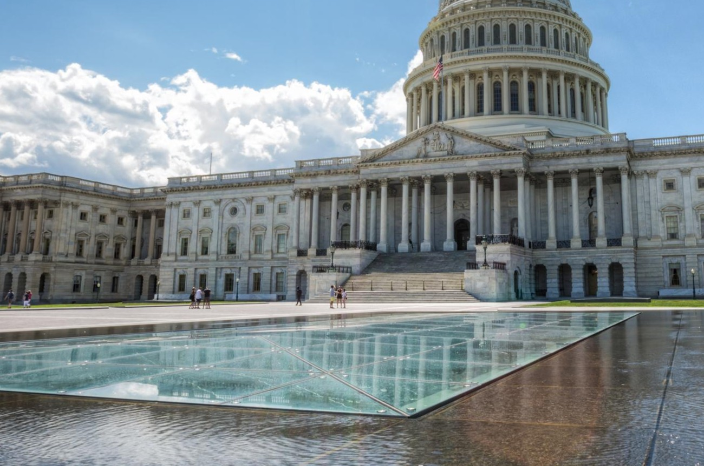

New Tax Policy Causes Backlash! What You Should Know For the Future!
by Paul Wiseman - The Associated Press - Published April 28, 2026

When the Supreme Court killed his favorite tariffs in February, President Donald Trump promptly rolled out temporary import taxes to replace them. But those stopgap levies expire in less than three months.
Now the administration is scrambling to put more durable tariffs in place to keep revenue flowing into the U.S. Treasury and to shore up the president’s protectionist wall around the American economy.
Starting this week, the Office of the U.S. Trade Representative will begin hearings in two investigations that are expected to lead to a new round of U.S. tariffs — taxes paid by importers in the United States and usually passed on via higher prices to consumers who are already fed up with the high cost of living.
Trump’s newest tariff push is sure to face more challenges in court but is likely to prove sturdier than the one the Supreme Court tossed out.
First up is a hearing Tuesday and Wednesday into whether 60 economies — from Nigeria to Norway and accounting for 99% of U.S. imports — do enough to prohibit the trade in products created by forced labor.
“For too long, American workers and firms have been forced to compete against foreign producers who may have an artificial cost advantage gained from the scourge of forced labor,” U.S. Trade Representative Jamieson Greer said in March. The administration could punish scofflaws with new tariffs.
Then, next week, the administration will hold hearings on whether 16 U.S. trading partners — including China, the European Union and Japan — are overproducing goods, driving down prices and putting U.S. manufacturers at a disadvantage. The economies being investigated account for 70% of U.S. imports, according to Erica York of the Tax Foundation. Again, the probe could result in new tariffs.
Most major economies, including China, the EU and Japan, are on both lists.
Taken from
NBC Washington News